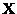
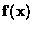

The quantitative analysis of low-dimensional chaotic dynamical systems has been an active area of research for many years. Up until now, most work has concentrated on the analysis of time series data from laboratory experiments and numerical simulations. Examples include Rayleigh-Bénard convection, Couette-Taylor fluid flow, and the Belousov-Zhabotinskii chemical reaction [Libchaber, Fauve & Laroche '83], [Roux '83] and [Swinney '84].
The key idea is to reconstruct a representation of the underlying attractor from the time series. (The time-delay embedding method [Takens '81] is one popular approach). Given the reconstructed attractor, it is possible to estimate various properties of the dynamics - Lyapunov exponents and an attractor's dimension, for example. Local approximations of the dynamics make it possible to reduce noise in the original time series and to make short-term predictions of the system's behavior. [Kostelich & Yorke '90] and [Sugihara & May '90].
In contrast, methods for the analysis of spatiotemporal data are not as well developed. This thesis describes a computer-aided tool, called kltool, which operates on spatiotemporal data from nonlinear systems. Its primary function is to analyze the data and extract a set of basic building blocks - the eigenfunctions of the dataset. These eigenfunctions are optimal, in a certain least-squares sense, and they can reveal coherent spatial structures within the data. It is then possible to reconstruct an approximation to the data using these eigenfunctions. In addition to providing these analytic and synthetic modes of operation, kltool has other capabilities which offer insight into dynamical models for the data.
Although the underlying mathematical analysis is well known, there has not been an interactive software package to apply it to a given dataset. Kltool is intended to be an easy-to-use, general-purpose software package for nonspecialists. In addition to describing this software, we present some new and interesting results obtained during the tool's development.
In the next Chapter, we discuss further the spatiotemporal data to be analyzed. In Chapter 3, dynamical systems and related concepts are introduced. Chapter 4 describes the mathematical details of the Karhunen-Loève (K-L) decomposition - the analytic tool to be applied to a given dataset. Kltool, which incorporates the K-L algorithm with accompanying software, will be explained in Chapter 5. We present some results of kltool's analysis of different datasets in Chapter 6. Chapter 7 offers a few thoughts on future directions and we summarize in Chapter 8.
The type of data we wish to analyze are generated by some nonlinear system
which evolves in time and which is spatially inhomogeneous.
We assume a spatial vector, ,
is obtained
at discrete time values, ti, providing a set of spatiotemporal data:
.
The components of
correspond to scalar measurements taken
at fixed points in space.
We allow for the visualization of one- or two-dimensional spatial vectors:
Two common methods of obtaining such spatiotemporal data are from laboratory experiments and numerical simulations of a mathematical model - typically a partial differential equation (PDE).
The problem we address is: can this complex set of data be understood and explained in some relatively simple manner? It would seem to be possible if the complexity is generated by the temporal evolution of only a few spatial structures.
A standard approach in analyzing such data is to perform a Fourier decomposition. One would hope that only a few dominant peaks appear in a power spectrum of the spatial modes, suggesting relatively simple spatial structures. However, it may be that a coherent spatial structure is composed of many Fourier modes and a Fourier analysis would not be the best approach.
The decomposition used in this thesis, and discussed further in Chapter 4, can compute coherent spatial structures directly. Furthermore, the structures will be optimal (in a least-squares sense) for a given dataset. Once the primary spatial structures are known, we will try to explain their temporal evolution within the framework of dynamical systems theory. The key concepts of this theory will be presented in the next chapter. However, as a prelude, we offer the following thought.
A primary objective in applying dynamical systems theory to a nonlinear system is to understand the long-term (asymptotic) behavior of the system in a qualitative way. If the system is sufficiently complex, it is unlikely that one can make any quantitative predictions about the system. However, if it is possible to reduce the number of degrees of freedom inherent in the system then certain qualitative descriptions may be possible.
Consider a PDE as a nonlinear system. One could think of such a system as having ultimate complexity - by virtue of having infinitely many degrees of freedom. It is known that the solution of many PDEs can be expanded in an infinite set of Fourier modes [Strang '86]. However, for certain dissipative PDEs, the theory of attracting sets and inertial manifolds guarantee that these systems are actually finite dimensional. See [Ruelle '89] and [Jolly, Kevrekidis & Titi '90] for examples. In fact, numerical simulations of certain PDEs suggest that they have relatively low-dimensional attractors. It is data coming from such low-dimensional systems, either PDEs or laboratory experiments, with which this thesis is primarily concerned.
In this chapter we present a few key concepts from dynamical systems theory. Within this mathematical theory, we hope to gain some understanding of nonlinear systems by examining their spatiotemporal data. An underlying assumption throughout this chapter is that the temporal dynamics of the systems being studied has relatively few degrees of freedom - on the order of ten or less.
A dynamical system is a way of describing the state of some system as it evolves in time. We illustrate via examples and simultaneously introduce related concepts and terminology.
Dynamical systems are commonly described by ordinary differential
equations (ODEs) of the form:
 |
(3.1) |
with the dependent variables , the independent variable , and possible free parameters . The space of dependent variables is called the phase space (or state space) of a dynamical system.
The extensive theory of differential equations has an important role in the study of dynamical systems. For questions concerning the existence and uniqueness of solutions to (3.1), as well as other theoretical issues, see [Waltman '86]. When one tries to understand the asymptotic dynamics of differential equations, it is assumed that enough time has elapsed so that all transient behavior has died out.
We now describe how the study of dynamical systems makes use of geometric concepts. Since geometric descriptions are usually more intuitive than algebraic ones, the ideas are more easily grasped.
Every system of the form (3.1) implies a related vector field.
The idea is simple. To each point in the phase space, we assign an
instantaneous velocity vector obtained from the right-hand side of the system.
A solution (also, orbit or trajectory) of (3.1)
is a curve,
,
whose tangent vector at any given t is the vector

(at
the point ). Hence, we can compute a solution by integrating the
right-hand side of the system.
A solution,
,
will depend on an
initial condition,  ,
and on the free
parameters .
,
and on the free
parameters .
We illustrate with a simple example. Consider the 2D autonomous1, linear system:
|
|
(3.2) |
The vector field and a solution of (3.2) are shown in Figure 3.1.
Figure 3.1 Vector field and a solution of (3.2).
For system (3.2), we see that all solutions are periodic. For any , rotates forever about the origin. The origin is a fixed point (also critical point or equilibrium). Any solution starting at a fixed point will remain there. The particular type of fixed point in this example is called a center.
To find all fixed points of a system, one solves for the zeros of the
system:
The study of dynamical systems has a primary goal - to understand the asymptotic (long-term) behavior of its solutions in a qualitative way. For example, solutions might: (1) approach some fixed point, (2) ``blow up'' after some finite time, (3) approach some periodic solution, or (4) follow some other complicated motion.
Typically, solutions of a system will undergo qualitative changes as one of the system's free parameters, , is varied. Such a parameter is called a bifurcation parameter. Understanding these qualitative changes in the geometry of solutions in phase space is the subject of bifurcation theory [Wiggins '90].
Minor algebraic modifications to (3.2) lead to qualitatively different
solution structures in phase space. For a slightly more complicated
example, consider the coupled linear 2D system:
This system results in the fixed point at the origin to become a global attractor. The fixed point is called a sink. The vector field and a spiraling solution toward the origin are shown in Figure 3.2.
Figure 3.2 Vector field with a sink at (0,0).
The origin, still a fixed point, is repelling in the system:
This type of fixed point is called a source. The vector field and an outward spiraling solution are shown in Figure 3.3.
Figure 3.3 Vector field with a source at (0,0).
An example of a fixed point being both attracting (stable) and repelling
(unstable) - in
different directions, is given by the system:
Here, the fixed point at the origin is called a saddle. The vector field is shown in Figure 3.4.
Figure 3.4 Vector field with a saddle at (0,0).
From the theory of ODEs, we know that the stability of fixed points of linear systems can be determined from the eigenvalues of the coefficient matrix of the right-hand side. In the above systems, the sink is asymptotically stable, the center is stable (but not asymptotically), and the source and saddle are unstable.
Nonlinear systems are more likely to be used as models for real-life systems.
They are more complex than linear systems and give rise to more interesting
phase space structures than fixed points.
For example, in 2D (and higher) nonlinear systems, one can find
limit cycles.
A limit cycle is a closed, periodic orbit which can be either attracting
or repelling. As an example, the following nonlinear system
contains an attracting limit cycle. The system
is a model for electrical circuits whose resistive properties change
according to the supplied current.
It is known as the van der Pol system:
The parameter is a bifurcation parameter. When , the origin is a global attractor. When 0$">, the origin loses stability, becoming a repellor, and an attracting limit cycle is created. The point at which this happens is known as a Hopf bifurcation point. A limit cycle of this system, for , is shown in Figure 3.5. A solution starting near the origin is attracted outward to the limit cycle, whereas a solution starting outside the limit cycle is attracted inward to it. The asymptotic solutions, x(t) and y(t), would be sinusoidal as plotted in Figure 3.6.
Figure 3.5 An attracting limit cycle.
Figure 3.6 x(t), y(t) of limit cycle.
The Poincaré-Bendixson theorem is useful for guaranteeing the existence of a limit cycle in 2D autonomous systems of ODEs [Hirsch & Smale '74]. The stability of fixed points becomes a local property for nonlinear systems. One must linearize the system about a fixed point to determine that fixed point's stability. See [Waltman '86] for this important theory.
There are other closed, but nonperiodic, orbits which occur in phase space. A homoclinic orbit is one which leaves the neighborhood of a fixed point along an unstable direction and loops back on itself along a stable direction. A heteroclinic orbit connects two (or more) different fixed points together via their stable and unstable manifolds as illustrated in Figure 3.7.
Figure 3.7 A homoclinic and heteroclinic orbit.
So that one does not conclude is the only possible phase space, we describe a classic example of a dynamical system - the pendulum. This physical system is illustrated in Figure 3.8. It consists of a bob
Figure 3.8 The simple pendulum.
attached to a rigid rod which rotates around an axis. The state of the
system is most naturally described by it phase and angular velocity:
and
,
with
.
The dynamics are given by the system:
The phase space is therefore an infinite cylinder: . For plotting convenience, however, this cylinder can be mapped into with being -periodic along the horizontal axis. Solutions in this phase space for the undamped system (k=0) are shown in Figure 3.9 and for the damped system (k>0) in Figure 3.10.
Figure 3.9 Solutions of the undamped pendulum.
Figure 3.10 Solutions of the damped pendulum.
The base of each vector in the vector field serves as an initial value for a solution. In the undamped system, the position is locally a center. This means that for small enough angular velocity, , the pendulum will swing back and forth about without ever making a full revolution. However, for too large angular velocity, the pendulum will forever revolve about its axis in only one direction. In the damped system, becomes a sink (locally) and any nearby orbits get attracted to this fixed point. The point is a saddle. A homoclinic orbit would leave from and return to this point.
Going to three-dimensional systems, even more interesting dynamics and
geometric structures occur in phase space. We illustrate with a well known
system given by [Lorenz '63]:
This system is an over-simplified model for convection. It is also a model for a perfectly tuned two-level laser [Newell & Moloney '92]. The dynamics and bifurcations of the Lorenz system are discussed in [Sparrow '82]. For particular values of the bifurcation parameters, , and , an interesting attractor appears in phase space. Unlike a fixed point or a limit cycle, this attractor has a more complicated geometric structure. It is a three-dimensional ``figure-8'' shape. However, the attractor is not a closed orbit. Rather, it has some ``thickness''. We show a solution captured within this attracting structure in Figure 3.11. This idea of having a deterministic system which results in complex, yet coherent, dynamics is the backdrop for chaos theory [Wiggins '88] which has been popularized in [Gleick '87].
Figure 3.11 Lorenz attractor projected onto the xy plane (top) and yz plane (bottom).
It was stated earlier that a primary goal of studying dynamical systems is to understand the long-term dynamics in a qualitative way. The Lorenz attractor offers a good example. We know that for certain parameter values of the system, solutions will asymptotically remain confined to the subspace in which the attractor lies. This raises another key concept in dynamical systems theory - the dimension of attractors. It is for this topic that dynamical systems requires the notion of fractals and fractional dimensions [Barnsley '88] and [Farmer, Ott & Yorke '83].
Being able to compute the dimension of an attractor and to construct the attractor, using empirical data from a dynamical system, has been an active area of research [Broomhead & King '85], [Sauer, Yorke & Casdagli '91], [Kostelich '92], and [Gibson, Farmer, Casdagli & Eubank '92]. These methods typically operate on a time series of some scalar measurement of the system as mentioned in Chapter 1. This is inherently different from the analysis treated in this thesis which deals with spatiotemporal data, as discussed in Chapter 2.
In conclusion, we want to bridge the gap between the low-dimensional
dynamical systems as presented in this chapter and the
infinite-dimensional PDEs as discussed in Chapter 2.
This is done via a Galërkin projection.
Assuming the solution to a PDE can be approximated by the
expansion:
where the are known spatial structures, then the time-dependent coefficients, ai(t), are obtained as solutions of an N-dimensional system of ODEs, known as a Galërkin projection:
We then need to make analogous classifications of a PDE's asymptotic dynamics with those of a system of ODEs as presented in this chapter. A fixed point corresponds to a stable spatial structure of a PDE. A limit cycle corresponds to some oscillating spatial structure, for example, either a standing wave or a travelling wave. And chaotic (``strange'') attractors which are low-dimensional should correspond to spatiotemporal complexity generated by the temporal evolution of only a few coherent spatial structures.
This chapter has presented some basic definitions and concepts of dynamical systems. For a visual and intuitive introduction, see [Abraham & Shaw '84]. A graphical environment for experimenting with dynamical systems on a personal computer can be found in [Koçak '86]. Other computer packages which offer a more sophisticated analysis of dynamical systems are [Guckenheimer & Kim '90] and [Yorke '90]. For a thorough and mathematically rigorous treatment of this subject, see [Guckenheimer & Holmes '83] and [Wiggins '90].
The method of analysis at the core of this thesis appears in various guises and is known by different names - depending on the area of application. In image processing, it is known as the Hotelling transform [Gonzalez & Wintz '87]. In pattern recognition, the name principal component analysis is commonplace. Both application areas typically analyze an ensemble of static data. For example, consider an image from a satellite's camera. The same image will be transmitted repeatedly, but each version will be slightly noise-contaminated due to Earth's atmosphere. A subsequent analysis is performed to remove, or at least reduce, the noise.
The method is also known as the Karhunen-Loève (K-L) decomposition. However, in the context of this thesis, the data to be analyzed will be temporally evolving rather than being an ensemble.
Another name for this method is proper orthogonal decomposition (POD). [Lumley '67] proposed that the method be used in fluid flow analysis. He suggested that it could provide an unbiased identification of coherent structures in turbulent flow. See [Aubry, Holmes, Lumley & Stone '88] for an application.
Regardless of the name and the application, the method is essentially the same. It is based on second-order statistical properties [Loève '55] which result in a set of optimal eigenfunctions. We now present the theory behind the decomposition.
First, we assume data to be a set of (real) random vectors:
where . In the classical theory from statistical pattern recognition [Fukunaga '90], one would then need to characterize each random vector with a probability density function. This would be used to define, via integration, the mean of a random vector. Finally, the covariance matrix, indicating the dispersion of the vectors' distribution, could be calculated. It is this matrix which provides the information that we want. Specifically, we wish to know its eigenvalues and eigenvectors.
These theoretical calculations are approximated in actual computations
from the given set of vectors. The mean is computed as:
For convenience, we then compute an additional sequence of vectors which
have zero mean:
The are called the caricature vectors.
The covariance matrix is then approximated by:
We point out that the covariance matrix is an
 matrix, where N is the spatial resolution of a vector.
For large N, this matrix can become too large for practical computation.
However, by using the method of snapshots, as described by [Sirovich '87a],
the computation becomes more tractable.
Using this method, the covariance matrix becomes:
matrix, where N is the spatial resolution of a vector.
For large N, this matrix can become too large for practical computation.
However, by using the method of snapshots, as described by [Sirovich '87a],
the computation becomes more tractable.
Using this method, the covariance matrix becomes:
where denotes the usual Euclidean inner product. The matrix is now instead of
Since the covariance matrix is symmetric, we know that its eigenvalues, , are nonnegative and its eigenvectors, , , form a complete orthogonal set [Strang '76].
The orthogonal eigenfunctions of the data are defined as:
where is the i-th component of the k-th eigenvector. Lumley refers to these eigenfunctions as coherent structures of the data. Whether or not they would appear as spatial structures in a laboratory experiment is questionable [Sirovich '87b]. Nevertheless, there is cause to believe that they will be present at least indirectly. Perhaps an actual structure will consist of a linear combination of eigenfunctions.
A characterization of the eigenfunctions is that they form an
optimal basis for the expansion of a spatiotemporal dataset:
by minimizing the L2 norm of the error.
The ``energy'' of the data is defined as being the sum of the
eigenvalues of the covariance matrix:
To each eigenfunction we assign an energy percentage based on the eigenfunction's associated eigenvalue:
Assuming the eigenvalues are sorted largest to smallest, we have an ordering of the eigenfunctions from most to least energetic .
Finally, we can reconstruct any sample vector using the eigenfunctions:
where the coefficients are computed from the projection of the sample vector onto an eigenfunction:
![\begin{eqnarray*}a_i = \left( \frac{\hat{\bf X} \cdot {\Psi}^{[i]}}
{{\Psi}^{[i]} \cdot {\Psi}^{[i]}} \right)
\end{eqnarray*}](img69.gif)
Using only the first K (K<M) most energetic eigenfunctions, we can construct an approximation to the data:
As a final note, we mention that the results of the above K-L decomposition can
also be obtained via singular value decomposition (SVD).
See [Strang '76] for an introduction to SVD.
Using this method, one would not compute the
covariance matrix.
Instead, an
rectangular matrix is generated:
The singular values, , (assuming M<N) and singular vectors of this matrix are then computed. Using the fact that , the computations would proceed as above. An application and discussion of the SVD method for a PDE modeling fluid motion can be found in [Newell, Rand & Russell '88]. A comparison of SVD and K-L, in terms of numerical accuracy, is discussed in [Mees, Rapp & Jennings '87].
We now describe the computer implementation of the Karhunen-Loève (K-L) decomposition as explained in the previous chapter. First, we discuss some implementation issues and present an overview of capabilities of kltool. We then describe specific applications of kltool using examples in Chapter 6.
5.1. Implementation
Pragmatic considerations determined how kltool is implemented. We wanted hardware which could render high-quality graphics and perform reasonably fast computations. Also, since we wanted to make the tool available to others, selecting a widely available platform was important. The Silicon Graphics Personal Iris was selected for the initial implementation primarily because of its high-quality 3D graphics.
On the software side, the tool is implemented in the C programming language. All graphics are performed using the Graphics Library, a set of graphics routines available on Silicon Graphics workstations. The numerical decomposition routines are obtained from public domain software libraries.
5.2. Functionality
The functionality of kltool generally adheres to the current trend of workstation applications: interacting with the user via popup menus and dialog boxes and displaying results in multiple windows on the screen. These nontrivial issues are discussed in [Shneiderman '80].
A schematic overview of kltool's functionality is depicted in Figure 5.1. We briefly describe the function of each operation:
Figure 5.1 Overview of kltool.
 (u-r), error(l-l),
(u-r), error(l-l),

 (l-r).
(l-r).